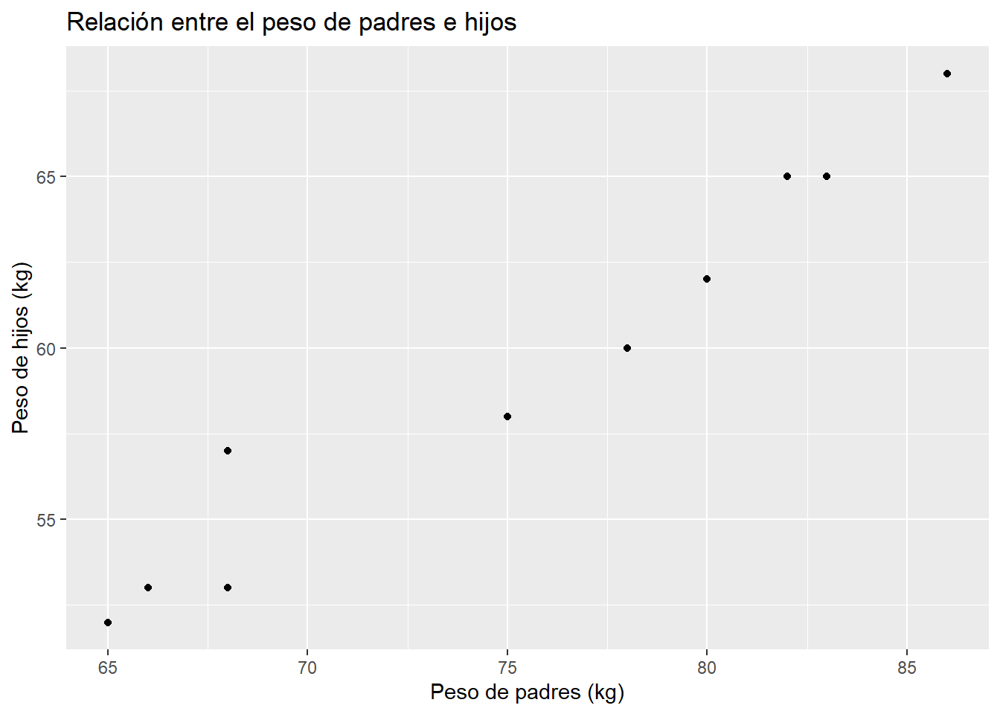
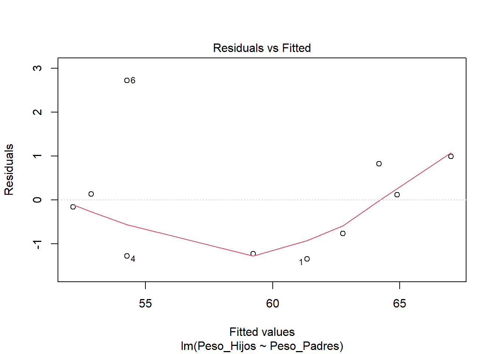
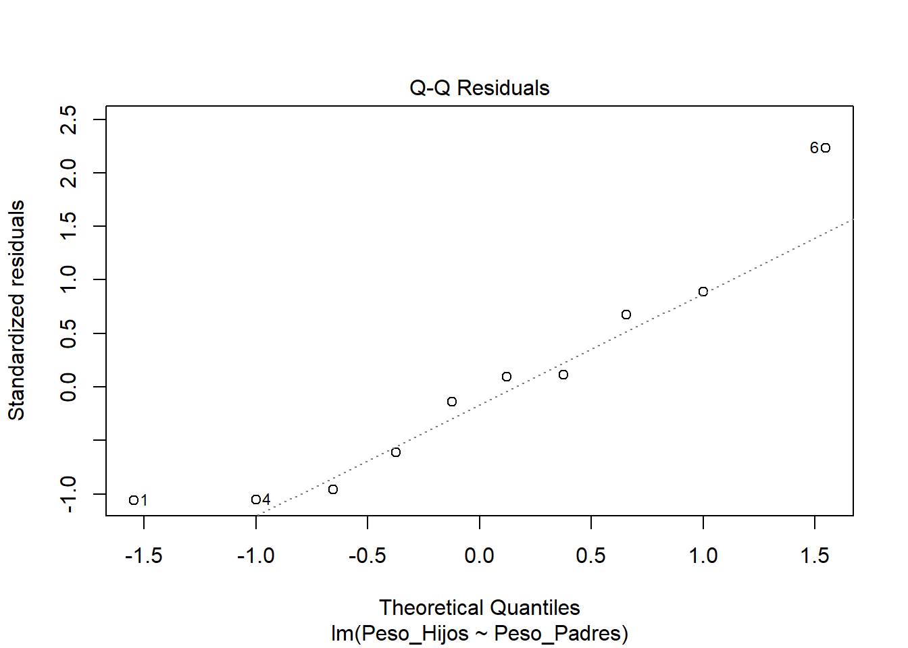

# Instalación y carga de paquetes necesarios
if (!require(tidyverse)) install.packages("tidyverse")
if (!require(car)) install.packages("car")
if (!require(lmtest)) install.packages("lmtest")
if (!require(nortest)) install.packages("nortest")19 Regresión Lineal Simple usando R
La regresión lineal simple es una técnica estadística fundamental para analizar la relación entre dos variables cuantitativas, permitiendo modelar y predecir el comportamiento de una variable dependiente a partir de una variable independiente. En el contexto de la agronomía, esta herramienta resulta esencial para comprender fenómenos como la relación entre el peso en cultivos o animales, entre otros ejemplos relevantes (Montgomery et al., 2021; López & González, 2018).
19.1 Fundamentos Teóricos
El modelo de regresión lineal simple se expresa mediante la siguiente ecuación:
\[\huge Y_i = \beta_0 + \beta_1 X_i + \varepsilon_i\]
En esta expresión:
\(Y_i\) representa el valor observado de la variable dependiente para el individuo i.
\(X_i\) es el valor observado de la variable independiente para el individuo i.
\(\beta_0\) es el intercepto o constante, que indica el valor esperado de \(Y\) cuando \(X=0\).
\(\beta_1\) es la pendiente, que representa el cambio promedio en \(Y\) por cada unidad de cambio en \(X\).
\(\varepsilon_i\) es el término de error aleatorio, que recoge la variabilidad no explicada por el modelo.
El objetivo de la regresión es estimar los valores de \(\beta_0\) y \(\beta_1\) que mejor se ajustan a los datos observados. Para ello, se utiliza el método de mínimos cuadrados, que minimiza la suma de los cuadrados de las diferencias entre los valores observados y los valores predichos por el modelo (Montgomery et al., 2021).
Las fórmulas para los estimadores de mínimos cuadrados son:
\[\LARGE \hat{\beta_1} = \frac{\sum_{i=1}^{n} (x_i - \bar{x})(y_i - \bar{y})}{\sum_{i=1}^{n} (x_i - \bar{x})^2}\]
\[\LARGE \hat{\beta_0} = \bar{y} - \hat{\beta_1}\bar{x}\]
donde \(\bar{x}\) y \(\bar{y}\) son las medias de las variables \(X\) y \(Y\) respectivamente.
19.2 Supuestos del Modelo
Para que los resultados de la regresión lineal simple sean válidos, es necesario que se cumplan los siguientes supuestos (López & González, 2018):
Linealidad: La relación entre la variable independiente y la dependiente debe ser lineal. Esto significa que el efecto de \(X\) sobre \(Y\) es constante a lo largo de todo el rango de valores.
Normalidad de los errores: Los residuos (diferencias entre los valores observados y los predichos) deben seguir una distribución normal.
Homocedasticidad: La varianza de los errores debe ser constante para todos los valores de \(X\).
Independencia: Las observaciones deben ser independientes entre sí, es decir, el valor de una observación no debe influir en el valor de otra.
El incumplimiento de estos supuestos puede llevar a conclusiones erróneas o a una interpretación incorrecta de los resultados.
19.3 Análisis Práctico en R
19.3.1 Instalación y carga de paquetes
El análisis inicia con la carga de los paquetes especializados y la exploración de los datos:
Se recomienda siempre inspeccionar los datos antes de analizarlos. En este ejemplo, se utiliza un conjunto de datos ficticio sobre el peso de padres e hijos empleado para explicar el análisis de correlación lineal:
# Datos del ejemplo: peso de padres (X) y peso de hijos (Y) en kilogramos
datos <- data.frame(
Peso_Padres = c(78, 65, 86, 68, 83, 68, 75, 80, 82, 66),
Peso_Hijos = c(60, 52, 68, 53, 65, 57, 58, 62, 65, 53)
)Es recomendable graficar los datos para observar la posible relación lineal:
# Gráfico de dispersión
ggplot(datos, aes(x = Peso_Padres, y = Peso_Hijos)) +
geom_point() +
labs(title = "Relación entre el peso de padres e hijos",
x = "Peso de padres (kg)",
y = "Peso de hijos (kg)")
19.3.2 Ajuste del Modelo
Para ajustar el modelo, se utiliza la función lm(), cuya sintaxis general es:
modelo <- lm(Y ~ X, data = datos)En este caso:
modelo <- lm(Peso_Hijos ~ Peso_Padres, data = datos)Para obtener un resumen detallado del modelo, se emplea:
summary(modelo)
Call:
lm(formula = Peso_Hijos ~ Peso_Padres, data = datos)
Residuals:
Min 1Q Median 3Q Max
-1.35052 -1.11314 -0.02222 0.64948 2.72024
Coefficients:
Estimate Std. Error t value Pr(>|t|)
(Intercept) 6.19857 4.37024 1.418 0.194
Peso_Padres 0.70708 0.05791 12.209 1.88e-06 ***
---
Signif. codes: 0 '***' 0.001 '**' 0.01 '*' 0.05 '.' 0.1 ' ' 1
Residual standard error: 1.354 on 8 degrees of freedom
Multiple R-squared: 0.9491, Adjusted R-squared: 0.9427
F-statistic: 149.1 on 1 and 8 DF, p-value: 1.879e-06El resumen incluye los coeficientes estimados, sus errores estándar, valores t y p, así como el coeficiente de determinación (\(R^2\)), que indica la proporción de la variabilidad de \(Y\) explicada por \(X\).
19.3.3 Evaluación Crítica de Supuestos
19.3.3.1 Supuesto de Linealidad
Se evalúa mediante el gráfico de residuos vs valores ajustados. Si los residuos se distribuyen aleatoriamente alrededor de cero, el supuesto se considera cumplido.
plot(modelo, which = 1) # Residuals vs Fitted
19.3.3.2 Supuesto de Normalidad
Se puede evaluar visualmente con un gráfico Q-Q y mediante pruebas estadísticas como Shapiro-Wilk y Anderson-Darling:
Gráfico Q-Q:
# Gráfico Q-Q
plot(modelo, which = 2) # Normal Q-Q
Prueba de Shapiro-Wilk:
\(H_0\): Los residuos siguen distribución normal
\(H_a\): Los residuos no siguen distribución normal
shapiro.test(residuals(modelo))
Shapiro-Wilk normality test
data: residuals(modelo)
W = 0.9049, p-value = 0.2478Prueba de Anderson-Darling (más potente para muestras grandes):
ad.test(residuals(modelo))
Anderson-Darling normality test
data: residuals(modelo)
A = 0.36544, p-value = 0.360419.3.3.3 Supuesto de Homocedasticidad
Se evalúa con la Prueba de Breusch-Pagan:
\(H_0\): Varianza constante (homocedasticidad)
\(H_a\): Varianza no constante (heterocedasticidad)
bptest(modelo)
studentized Breusch-Pagan test
data: modelo
BP = 0.71286, df = 1, p-value = 0.398519.3.3.4 Supuesto de independencia
En estudios experimentales, la independencia suele garantizarse mediante un diseño adecuado. En estudios observacionales, se recomienda analizar el contexto y, si es posible, realizar pruebas adicionales.
19.4 Predicción con el modelo ajustado
Una vez ajustado el modelo, se pueden realizar predicciones para nuevos valores de la variable independiente:
# Nuevos valores de Peso_Padres
nuevos_pesos <- data.frame(Peso_Padres = c(60, 75, 80))
# Predicción con intervalos de predicción
predicciones <- predict(modelo, nuevos_pesos, interval = "prediction")
predicciones fit lwr upr
1 48.62315 44.77666 52.46963
2 59.22929 55.95375 62.50484
3 62.76467 59.42443 66.10492El resultado incluye el valor predicho y los límites inferior y superior del intervalo de predicción para cada nuevo valor.
19.5 Interpretación de Resultados
19.5.1 Coeficientes del Modelo
Intercepto (\(\hat{\beta_0}\)): Valor esperado de Y cuando X = 0
Pendiente (\(\hat{\beta_1}\)): Cambio promedio en Y por unidad de cambio en X
19.5.2 Bondad de Ajuste
El coeficiente de determinación (\(R^2\)) indica la proporción de variabilidad explicada:
\[\huge R^2 = \frac{SC_{Regresión}}{SC_{Total}}\]
\(R^2 > 0.7\): Ajuste bueno
\(-0.5 < R^2 < 0.7\): Ajuste moderado
\(R^2 < 0.5\): Ajuste pobre
19.5.3 Significancia Estadística
La prueba F global evalúa:
\(H_0\): \(\beta_1 = 0\) (no hay relación lineal)
\(H_a\): \(\beta_1 \neq 0\) (existe relación lineal)
19.5.4 Criterios de Decisión para los supuestos
| Supuesto | Prueba | Criterio de Aceptación |
|---|---|---|
| Normalidad | Shapiro-Wilk | p-valor > 0.05 |
| Homocedasticidad | Breusch-Pagan | p-valor > 0.05 |
| Linealidad | Gráfico residuos | Patrón aleatorio |
| Independencia | Contexto experimental | Diseño adecuado |
19.5.5 Pasos para una Interpretación Integral y Conclusiones
Evaluar significancia del modelo (prueba F global)
Verificar supuestos mediante pruebas estadísticas y gráficos
Interpretar coeficientes en el contexto del problema
Evaluar bondad de ajuste (\(R^2\) y \(R^2\) ajustado)
Identificar limitaciones del modelo
Formular recomendaciones prácticas